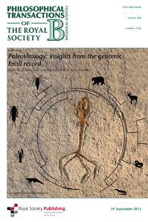
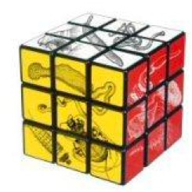

Society of Systematic Biologists
Home of Systematic Biology
Popular contentSyndicateCategories
User loginNavigationWho's onlineThere are currently 0 users and 8 guests online.
|
Published elsewhereContemporary and future studies in plant speciation, morphological/floral evolution and polyploidy
Classical determination of monophylySystematists with a yen for theory might be Zander, R. H. 2014. Classical determination of monophyly, In which I attempt to formalize (find the statistical and We are apparently good at it but can’t say why. Until now. If I’m right. These may be found on the Phytoneuron Web site: phyloseminar #33: Daniel Ksepka, NESCentDaniel Ksepka, NESCent Paleovirology: Insights from the genomic fossil recordRoyal Society Publishing has just published Paleovirology: Insights from the genomic fossil record, compiled and edited by Aris Katzourakis. A Framework for Post-Phylogenetic SystematicsA Framework for Post-Phylogenetic Systematics, by R. H. Zander, is now available on Amazon. From the back cover: The Framework reframes biological systematics to reconcile classical and cladistic schools. It combines scientific intuition and statistical inference in a new form of total evidence analysis developing a joint macroevolutionary process-based causal theory. Discrepancies between classical results and morphological and molecular cladograms are explained through heterophyletic inference of deep ancestral taxa, coarse priors leading to Bayesian Solution of total evidence, self-nesting ladders that can reverse branching order, and a superoptimization protocol that aids in distinguishing pseudoextinction from budding evolution. It determines direction of transformative evolution through Dollo evaluation at the taxon level. The genus as a basic, practical unit of evolution is postulated for taxa with dissilient evolution. A Philosophical Critique of Philogenetic SystematicsZander, R. H. 2010 [2011]. Structuralism in Phylogenetic Systematics. Biological Theory 5: 383-394. [Abstract:] Systematics based solely on structuralist principles is nonscience because it is derived from first principles that are inconsistent in dealing with both synchronic and diachronic aspects of evolution, and its evolutionary models involve hidden causes, and unnamable and unobservable entities. Structuralist phylogenetics emulates axiomatic mathematics through emphasis on deduction, and "hypotheses" and "mapped trait changes" that are actually lemmas and theorems. Sister-group only evolutionary trees have no caulistic element of scientific realism. This results in a degenerate systematics based on patterns of fact or evidence being treated as so fundamental that all other data may be mapped to the cladogram, resulting in an apparently well-supported classification that is devoid of evolutionary theory. Structuralism in systematics is based on a non-ultrametric analysis of sister-group informative data that cannot detect or model a named taxon giving rise to a named taxon, resulting in classifications that do not reflect macroevolutionary changes unless they are sister lineages. Conservation efforts are negatively affected through epistemological extinction of scientific names. Evolutionary systematics is a viable alternative, involving both deduction and induction, hypothesis and theory, developing trees with both synchronic and diachronic dimensions often inferring nameable ancestral taxa, and resulting in classifications that advance evolutionary theory and explanations for particular groups. PLoS launches Currents:Tree of Life and Hubs:Biodiversity
PLoS Currents: Tree of Life is a new open-access publication that reduces the delay between the creation of data and publication to a matter of days. The content is peer-reviewed, citable, publicly archived and included in PubMed. Tree of Life is edited by Keith Crandall (Brigham Young University, USA), Douglas Soltis (University of Florida, USA), and Pamela Soltis. For more details see the post on the official PLoS blog. PLoS have also launched PLoS Hubs: Biodiversity, which aggregates open-access biodiversity articles from multiple journals (not just PLoS titles). You can find more details on the background behind the Hub in the guest blog post Aggregating, tagging and connecting biodiversity studies by David Mindell and others. Old journal has new focus
Evolution of the animals - a Linnean tercentenary celebration
 Subscribers to the journal can view the articles online. Hard copy can be purchased at a specially discounted price of Ã?£47.50 (instead of the normal Ã?£59.50) by contacting Portland Press (quoting reference TB 1496) or Debbie Vaughan at the Royal Society (debbie.vaughan@royalsociety.org). Construction and annotation of large phylogenetic treesMike Sanderson's review "Construction and annotation of large phylogenetic trees" has just been published in Australian Systematic Botany 20(4) 287ââ?¬"301 doi:10.1071/SB07006 . Broad availability of molecular sequence data allows construction of phylogenetic trees with 1000s or even 10 000s of taxa. This paper reviews methodological, technological and empirical issues raised in phylogenetic inference at this scale. Numerous algorithmic and computational challenges have been identified surrounding the core problem of reconstructing large trees accurately from sequence data, but many other obstacles, both upstream and downstream of this step, are less well understood. Before phylogenetic analysis, data must be generated de novo or extracted from existing databases, compiled into blocks of homologous data with controlled properties, aligned, examined for the presence of gene duplications or other kinds of complicating factors, and finally, combined with other evidence via supermatrix or supertree approaches. After phylogenetic analysis, confidence assessments are usually reported, along with other kinds of annotations, such as clade names, or annotations requiring additional inference procedures, such as trait evolution or divergence time estimates. Prospects for partial automation of large-tree construction are also discussed, as well as risks associated with ââ?¬Ë?outsourcingââ?¬â?¢ phylogenetic inference beyond the systematics community. |
Latest issue
EVOLDIRphylobabble.orgiPhyloPhyloseminarSystematics AssociationNESCentThe Genealogical World of Phylogenetic NetworksCiteULike PhylogenyEvolutionary Bioinformatics
CladisticsBMC Evolutionary Biology
Molecular Biology and Evolution |
 Follow us on Twitter
Follow us on Twitter Find us on Facebook
Find us on Facebook The Royal Society has published a special issue celebrates the distinguished scientific career of Leslie Gottlieb, who investigated the evolutionary processes that generate the Earth’s life-sustaining plant diversity.
The Royal Society has published a special issue celebrates the distinguished scientific career of Leslie Gottlieb, who investigated the evolutionary processes that generate the Earth’s life-sustaining plant diversity. The journal Contributions to Zoology '.. since 1848 ..' solicits high-quality papers in all systematics-related branches of Zoology and Paleontology. Preference will be given to manuscripts dealing with conceptual issues and to integrative papers. Reviews and alpha-taxonomic contributions may be considered for publication, but acceptance will depend on their high quality and exceptional nature. The journal is published by the National Museum of Natural History Naturalis, Leiden and the Zoological Museum Amsterdam and is freely available online since 1997 at
The journal Contributions to Zoology '.. since 1848 ..' solicits high-quality papers in all systematics-related branches of Zoology and Paleontology. Preference will be given to manuscripts dealing with conceptual issues and to integrative papers. Reviews and alpha-taxonomic contributions may be considered for publication, but acceptance will depend on their high quality and exceptional nature. The journal is published by the National Museum of Natural History Naturalis, Leiden and the Zoological Museum Amsterdam and is freely available online since 1997 at